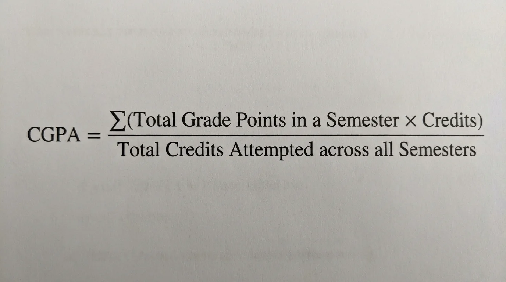

Free online CGPA calculator with multi-semester support and SGPA target planning.
The CGPA (Cumulative Grade Point Average) is calculated using the total grade points earned across all semesters divided by the total credit hours completed.

Formula:
CGPA = (Total Grade Points Earned) ÷ (Total Credit Hours)
A CGPA (Cumulative Grade Point Average) grading system is a standardized method used by schools, colleges, and universities to evaluate a student’s overall academic performance across all semesters or academic years.
Instead of calculating performance based on raw marks or percentages, the CGPA system converts grades into grade points, which are then averaged to produce a cumulative score.
This system makes it easier to compare academic performance across different courses, subjects, and institutions.
In a CGPA grading system, each subject grade is assigned a grade point value based on the student’s score. These grade points are multiplied by the credit hours of the subject and then averaged across all subjects.
The result is the CGPA, which represents the student’s overall academic performance on a fixed scale such as 4.0 or 10.0.
The general calculation process is:
Formula: CGPA = Total Grade Points Earned ÷ Total Credit Hours
Different universities use different CGPA scales depending on their academic system. The most common ones include:
This is widely used in the United States, Canada, and many international universities.
| Grade | Percentage Range | Grade Point |
|---|---|---|
| A | 90 – 100 | 4.0 |
| B | 80 – 89 | 3.0 |
| C | 70 – 79 | 2.0 |
| D | 60 – 69 | 1.0 |
| F | Below 60 | 0.0 |
In this system, a 4.0 CGPA represents the highest academic performance.
This scale is commonly used in India and several Asian universities.
| Grade | Percentage Range | Grade Point |
|---|---|---|
| A+ | 90 – 100 | 10 |
| A | 80 – 89 | 9 |
| B+ | 70 – 79 | 8 |
| B | 60 – 69 | 7 |
| C | 50 – 59 | 6 |
| D | 40 – 49 | 5 |
| F | Below 40 | 0 |
In this system, the maximum CGPA a student can achieve is 10.0.
Each course a student takes has a credit value that represents the academic weight of the subject. Subjects with more credits have a greater impact on the final CGPA.
Example:
| Subject | Credits | Grade | Grade Point |
|---|---|---|---|
| Mathematics | 3 | A | 4.0 |
| Physics | 4 | B | 3.0 |
| Chemistry | 3 | A | 4.0 |
To calculate CGPA:
(3 × 4.0) + (4 × 3.0) + (3 × 4.0) = 36 total grade points
Total credits = 10
CGPA = 36 ÷ 10 = 3.6
So the student’s CGPA would be 3.6.
The CGPA grading system offers several advantages over traditional percentage-based evaluation.
Although CGPA and GPA are often used interchangeably, they are slightly different.
In simple terms:
GPA = One semester performance
CGPA = Overall academic performance
Many universities convert CGPA into percentage using a simple formula. A commonly used formula is:
Percentage = CGPA × 9.5
Example:
| CGPA | Calculation | Percentage |
|---|---|---|
| 8.2 | 8.2 × 9.5 | 77.9% |
Note: This conversion method may vary depending on the institution.
The CGPA (Cumulative Grade Point Average) grading system began gaining widespread adoption during the 20th century, particularly in universities in the United States. Over time, many universities worldwide adopted CGPA or similar grade point systems to replace traditional percentage-based grading.
The CGPA system was not introduced by a single individual or organization. It developed gradually within the American higher education system as universities sought a standardized way to measure academic performance.
There is no single university officially recognized as the first to implement CGPA. Many early American universities adopted grade point average systems during the early 1900s, and the model spread internationally.
No, CGPA grading systems differ. Common scales include:
The calculation formula and grade conversion can vary depending on the university.
Yes, grading scales, credit systems, and conversion formulas vary. For example:
Students should follow their own institution's grading policy.
CGPA provides a standardized and flexible evaluation of academic performance across courses and semesters, making comparisons easier across programs and universities.
Yes, many universities use a formula: Percentage = CGPA × 9.5. Conversion methods may vary depending on the institution.
CGPA represents overall performance across all semesters. Individual semesters have GPA, while CGPA is the cumulative score of all semesters.